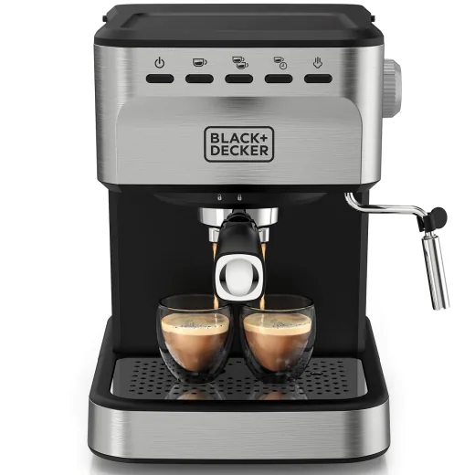
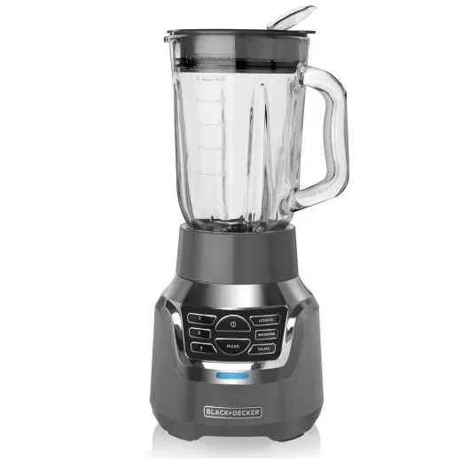
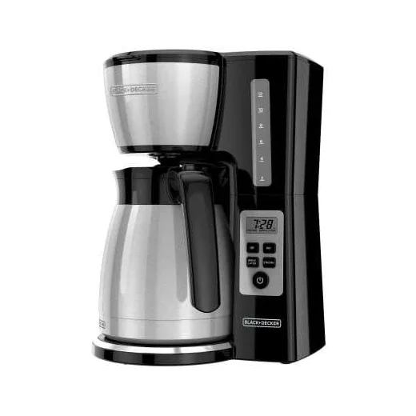
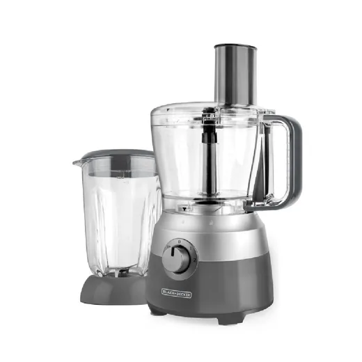
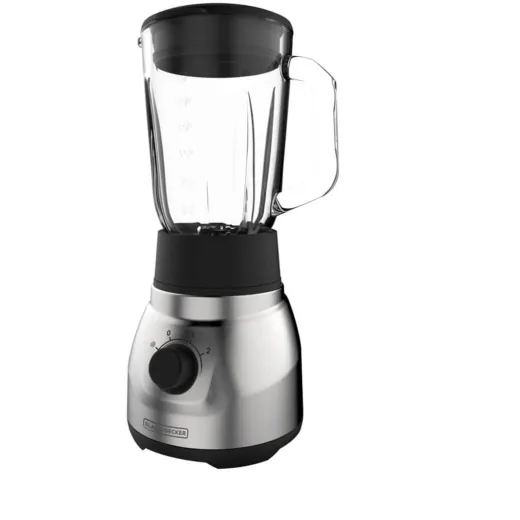
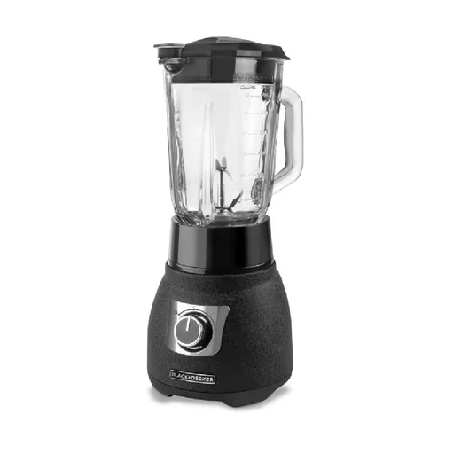

Inicio › Licuadoras y cafeteras

Black+Decker · Modelo EM03120SDLA
Cafetera Black + Decker 1.5 L Negro EM0312-0SDLA
L 3,595
Más barato en Gallo más Gallo · ahorras hasta L 2 frente a la tienda más cara
Precio en cada tienda
| Tienda | Precio | Antes | Disponibilidad | |
|---|---|---|---|---|
| Gallo más Gallo | L 3,595 | — | Disponible | Ver en tienda › |
| La Curacao | L 3,597 | Disponible | Ver en tienda › |
Precios referenciales tomados de cada tienda el 28 de noviembre de 2026. El precio válido es el que muestra la tienda al comprar.
Historial de precio
Lo seguimos desde el 1 de noviembre. Precio más bajo registrado: L 3,595 en Gallo más Gallo (20 de noviembre), igual que hoy. Cambios de precio registrados: 2.
Características
| Color | Negro |
|---|
Descripción
Cafetera Black & Decker 2 Tazas EM03120SDLA – espresso, cappuccino y más opciones para disfrutar café en Honduras La Cafetera Black & Decker 2 Tazas EM03120SDLA te permite preparar diferentes bebidas de café desde la comodidad de tu hogar. Su bomba de 20 bares, varilla de vapor, tanque removible de 1.5 litros y potencia de 1100W se combinan para facilitar la preparación de tus bebidas favoritas en Honduras. Prepará espresso con solo presionar un botón Disfrutá de un café espresso en casa mediante un funcionamiento práctico que te permite preparar tu bebida con solo presionar un botón. Espresso, cappuccino, latte y americano Sus funciones semiautomáticas te permiten preparar espresso, cappuccino, latte y americano, brindándote diferentes alternativas según el café que querás disfrutar. Bomba de 20 bares de presión Cuenta con una bomba de 20 bares de presión, encargada de realizar la ext
Otros licuadoras y cafeteras Black+Decker
 Black a Decker Licuadora Digital FusionL 3,149En Walmart
Black a Decker Licuadora Digital FusionL 3,149En Walmart Licuadora Black + Decker 1.5 Lts Gris BL1840MSL 2,467En La Curacao
Licuadora Black + Decker 1.5 Lts Gris BL1840MSL 2,467En La Curacao Máquina de Espresso Black+Decker Semi Automática 20 baresL 4,795En Walmart
Máquina de Espresso Black+Decker Semi Automática 20 baresL 4,795En Walmart
Licuadora Digital Infusion 3 VelL 2,295En Lady Lee
Cafetera Black& Decker Programable 12 TaL 2,249En Diunsa
Procesador D/Alimen 10TZ Black + DeckerL 2,090En Diunsa
Licuadora Black & Decker 1.5 litros BL1650L 1,995En Gallo más Gallo
Licuadora Black + Decker Cyclone 2 VelocL 1,899En Diunsa